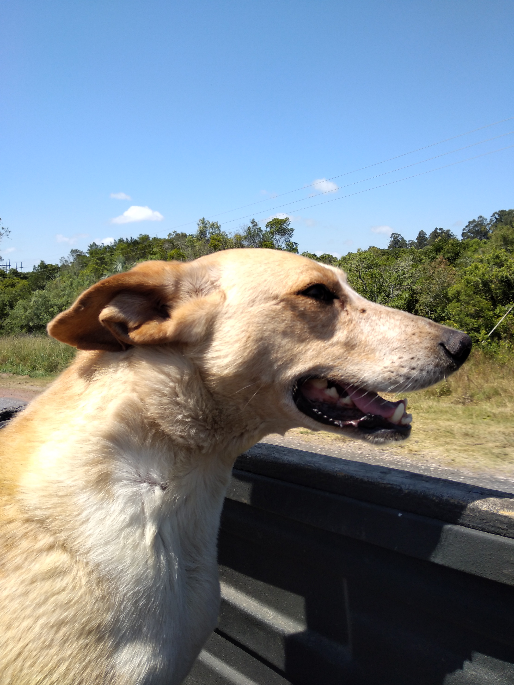

Galeria de Fotos

Acordamos no dia seguinte e andamos até a estrada principal para pegar uma carona até a saída da cidade. Passaram vários carros e estávamos com receio de não conseguir aquele dia por ser véspera de ano novo.
Casal mais velho, cujo homem se identifica como Toro, possui um carro antigo Fiat 147, cedeu seu humilde espaço atrás do banco para nos levar até a Rota 9. Não conversamos muito pois a viagem fora bem curta, mas o casal era bem simpático.
Toro nos deixou próximo da rotatória e seguiu em direção para Santa Teresa. Procuramos um local mais a frente, com sombra, pois o sol estava a pino.
Casal jovem sem identificação, em um automóvel humilde, não interagimos muito.
Paramos no trevo e entramos na rota 16, sentido Cabo Polônio.
Casal com cachorro, simplesmente nos colocou na caçamba e nos deixou no trevo, o qual havia duas direções, uma para a cidade de Aguas Dulces e outra para a Rota 10. Seguimos em direção à Rota 10.
Fernando foi muito gentil, mora em Valizas (400 habitantes), nos deixou até Cabo Polônio que fica a 5 Km de distância de sua cidade.
Chegamos ao nosso tão esperado destino. Nos informamos sobre o transporte até a costa de Cabo Polônio. A princípio, havia dois jeitos para chegar até lá. O primeiro seria à pé, porém, era inviável devido às bagagens que estávamos portando. A segunda, seria por meio de um caminhão. O preço da passagem de ida e volta custa mais ou menos R$ 35,00 (UYU 290,00). Optamos por pegar o caminhão, pois os horários são limitados. Partimos mais ou menos umas 16h30min e chegamos às 17h. Caminhamos até a estrada principal e em seguida, andamos até o farol. O valor da entrada é 35 pesos (R$ 4,00) e o horário de funcionamento ocorre até o fim do pôr do sol. É possível avistar uma colônia de elefantes-marinhos, leões-marinhos e lobos-marinhos a 20 metros de distância do farol. Por ser final de ano, os preços dos hostels estavam muito elevados. Além disso, é proibido levar a barraca para montar na praia, portanto, tivemos que deixá-la com os funcionários do transporte. Sem barraca e sem hospedagem, nossa última opção foi procurar um lugar ao ar livre para passarmos a noite. Após andarmos um pouco, demos sorte de encontrar um lugar perfeito, próximo ao mar, na varanda da casa de um pescador. Foi uma experiência incrível. Durante à noite, é possível ver muitas estrelas com bastante nitidez (é o céu mais estrelado que já vimos na vida). Apesar de ser a virada de ano, não notamos a presença de barulho de fogos, apenas algumas pessoas comemorando por poucos minutos, em seguida, houve um silêncio total, sendo possível ouvir apenas o movimento das ondas do mar. Para nós, foi uma das melhores viradas de ano de nossas vidas, por haver paz e tranquilidade. O lugar é único, mágico e encantador. Vale muito à pena conhecer este pedaço do Uruguai, para quem quer ter um contato mais próximo com a natureza, longe da eletricidade e do caos urbano.